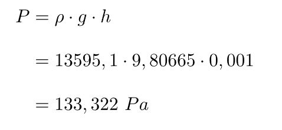

Qué es el milímetro de mercurio?
El milímetro de mercurio es una unidad de presión. Un milímetro de mercurio significa la presión que recibe un cuerpo cuando se sumerge en mercurio a un milímetro de profundidad. De manera que un milímetro de mercurio es equivalente a 133,322 Pa.
El símbolo del mercurio es Hg, por lo que el símbolo del milímetro de mercurio es mmHg.
Tomando como valor de la densidad del mercurio 13595,1 kg/m3 y de la gravedad 9,80665 m/s2, se puede calcular fácilmente a cuánto equivale un milímetro de mercurio aplicando la fórmula de la presión en un fluido:
Ten en cuenta que el milímetro de mercurio en realidad es una unidad que no pertenece al Sistema Internacional de Unidades (SI). No obstante, en algunos ámbitos se usa con frecuencia esta medida de presión, como por ejemplo en medicina.
Por otro lado, la unidad de presión en el Sistema Internacional es el pascal, por lo tanto, en física e ingeniería la mayoría de cálculos de presiones se expresan en pascales.
Finalmente, cabe destacar que es un error muy común considerar que un milímetro de mercurio es igual a un torr, pero no es exactamente así. Más abajo veremos la diferencia entre estas dos unidades de presión.